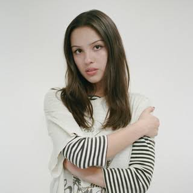
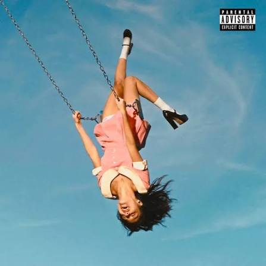
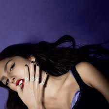
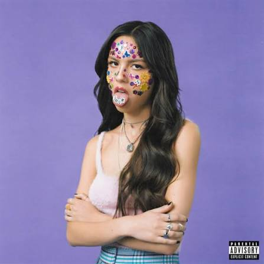

Composición
Escribo mis propias canciones, junto al productor Dan Nigro.

Cantautora y actriz
Ver proyectosSoy Olivia Rodrigo, cantautora y actriz estadounidense nacida en 2003 en Murrieta, California. Empecé en la actuación con series de Disney y llegué a la música con "drivers license", en 2021. Escribo canciones sobre el desamor, la ansiedad y el crecimiento, con una mezcla de pop, rock y baladas al piano.
Escribo mis propias canciones, junto al productor Dan Nigro.
Giras mundiales con shows en arenas y festivales.
Papeles en series de televisión y plataformas de streaming.
Canciones y presentaciones con otros artistas, como Weezer y Robert Smith.

Tercer álbum de estudio, publicado en junio de 2026 con 13 canciones.

Segundo álbum, de 2023, con un sonido más cercano al pop punk.

Álbum debut, de 2021, que incluye "drivers license".
¿Quieres escribirme? Reemplaza este correo de ejemplo por el tuyo.
Correo: oliviarodrigo@livedumb.com
Escríbeme